Breakthroughs in Cryptography#
“We stand today on the brink of a revolution in cryptography.” – Whitfield Diffie and Martin Hellman, New Directions in Cryptography, 1976
Every later idea in a blockchain rests on cryptography: a way to agree on a
secret in public, to prove who authorized a message, and to commit to data
without revealing it. This chronology traces the ideas behind
blockchainkit.crypto, from the one-time pad to Schnorr
multi-signatures. Each entry states the problem, the mechanism that solves it,
and the reason the mechanism works, so the argument can be followed step by
step. Parameters are deliberately small so every value can be inspected;
Exact conventions and model boundaries lists exactly where the package departs from deployed
systems.
1917-1949 – The One-Time Pad and Perfect Secrecy#
Gilbert Vernam built a teleprinter in 1917 that combined each character of a message with a character of a key tape, and Joseph Mauborgne added the rule that the tape must be random and never reused. Claude Shannon’s 1949 theory of secrecy systems proved why this is unbreakable. Fix a ciphertext \(c\). For every candidate message \(m\) of the same length there is exactly one key, \(k = c \oplus m\), that produces it, and a uniformly random key makes all of those keys equally likely. The ciphertext therefore gives no reason to prefer one message over another:
The argument needs both rules. Reusing the key gives \(c_1 \oplus c_2 = m_1 \oplus m_2\), in which the key has cancelled out; Soviet reuse of pads let the US Venona project read thousands of messages. Shannon also showed that every perfectly secret cipher needs at least as much key as message, which makes the pad impractical for exactly the reason it works: the two parties must already share a secret as long as everything they will ever say. That key-distribution problem is what public-key cryptography would solve.
Implementation: blockchainkit.crypto.systems.one_time_pad.one_time_pad()
refuses a key of the wrong length;
blockchainkit.crypto.systems.one_time_pad.xor_bytes() is the underlying
operation.
References: G. S. Vernam, Cipher Printing Telegraph Systems for Secret Wire and Radio Telegraphic Communications, Journal of the American Institute of Electrical Engineers 45, 109–115 (1926). C. E. Shannon, Communication Theory of Secrecy Systems, Bell System Technical Journal 28(4), 656–715 (1949). DOI.
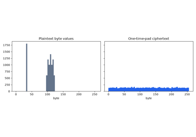
The one-time pad and perfect secrecy (Vernam 1917, Shannon 1949)
1971 – Baby-Step Giant-Step: Square-Root Discrete Logs#
In a cyclic group of order \(n\) generated by \(g\), computing \(h = g^x\) from \(x\) is fast, but the reverse, the discrete logarithm \(x\) of \(h\), has no obvious shortcut: trying every exponent takes up to \(n\) steps. Most of the public-key systems below are secure only because this reverse direction is hard, so the first question is how hard it really is. Daniel Shanks, studying class numbers of quadratic fields, traded memory for time to need only about \(\sqrt n\) steps. Every exponent below \(n\) can be written as \(x = im + j\) with \(m = \lceil\sqrt n\,\rceil\) and \(0 \le i, j < m\). Multiplying \(g^{im + j} = h\) by \(g^{-im}\) separates the two unknowns:
So store the \(m\) “baby steps” \(g^j\) in a table, then take “giant steps” \(h, hg^{-m}, hg^{-2m}, \dots\) until one appears in the table; the matching \(i\) and \(j\) give \(x\). Generic algorithms cannot do fundamentally better: Shoup proved in 1997 that any algorithm using only the group operations needs about \(\sqrt n\) steps. For well-chosen elliptic curves no attack better than these generic ones is known, which is why a group of about \(2^{256}\) elements gives about 128-bit security.
Implementation: blockchainkit.crypto.systems.discrete_log.baby_step_giant_step()
returns the exponent and the number of table multiplications.
References: D. Shanks, Class Number, a Theory of Factorization, and Genera, Proceedings of Symposia in Pure Mathematics 20, American Mathematical Society, 415–440 (1971).
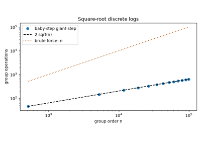
Baby-step giant-step: square-root discrete logs (Shanks 1971)
1974-1978 – Merkle’s Puzzles: Key Agreement in Public#
As an undergraduate in 1974, Ralph Merkle proposed the first scheme for two parties to agree on a secret over a public channel, attacking the key-distribution problem left by the one-time pad. Alice publishes \(N\) puzzles. Each one seals a random identifier and a random session key under a deliberately weak key, so it can be opened by brute force in about \(N\) trials. Alice keeps a private table from identifiers to session keys. Bob opens one puzzle chosen at random and announces only its identifier; Alice looks the identifier up, and both now hold the same session key. An eavesdropper hears the identifier but does not know which puzzle contains it, so they must open puzzles until they find it, about \(N/2\) of them on average:
The idea was hard to publish, and the paper appeared in 1978, after Diffie and Hellman’s. A quadratic gap is not practical security: an attacker with a thousand times Bob’s computing power can still keep up with a thousand-fold larger \(N\). Diffie-Hellman replaced it with a gap that grows exponentially in the key size. But the puzzles showed that public key agreement was possible at all, and Barak and Mahmoody later proved (2009) that the quadratic gap is the best any scheme built only from a random function can achieve.
Implementation: blockchainkit.crypto.systems.puzzles.merkle_puzzles()
creates the puzzles and Alice’s table;
blockchainkit.crypto.systems.puzzles.solve_puzzle() opens one by brute
force.
References: R. C. Merkle, Secure Communications over Insecure Channels, Communications of the ACM 21(4), 294–299 (1978). DOI.
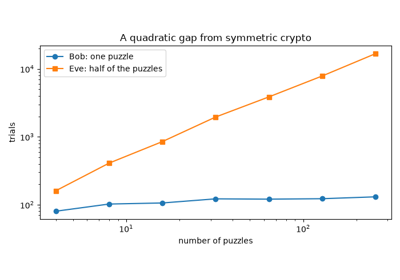
Merkle’s puzzles: the first public-key exchange (1974-1978)
1976 – Diffie-Hellman: Agreeing on a Secret over a Public Channel#
Sharing an encryption key used to require a secret channel in advance. Diffie and Hellman asked whether two people could reach the same secret by exchanging only public values. In their construction each party raises a public generator \(g\) to a private exponent, publishes the result, and raises the other’s public value to the same private exponent. Because exponents multiply in either order, both arrive at the same element:
An observer sees \(g, p, A, B\). The only known general way to compute \(g^{ab}\) from them is to recover \(a\) or \(b\), which is a discrete logarithm, and the 1971 entry shows its generic cost is about \(\sqrt n\). The honest parties do one exponentiation each, about \(\log_2 n\) multiplications, so the gap between them and the attacker grows exponentially with the key size. The exchange does not say who is at the other end: an attacker who substitutes their own public value shares one secret with each party and can relay between them. Deployed protocols therefore authenticate the exchange and pass the shared element through a key derivation function.
Implementation: blockchainkit.crypto.systems.asymmetric.DHGroup
validates the prime-order subgroup and peer elements. It runs in a 62-bit
teaching group with no authentication; deployments use 2048-bit groups or
X25519.
References: W. Diffie and M. E. Hellman, New Directions in Cryptography, IEEE Transactions on Information Theory 22(6), 644–654 (1976). DOI; author’s copy.
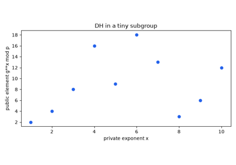
Diffie-Hellman: agreeing on a secret over a public channel (1976)
1978 – RSA and the Public Trapdoor#
Diffie-Hellman agrees on a key but does not let anyone encrypt to, or verify a signature from, a published key. Rivest, Shamir and Adleman gave the first concrete system with a trapdoor: a public operation that anyone can apply, and a private one that reverses it. Choose distinct primes \(p, q\), publish \(n = pq\) and an exponent \(e\), and keep the inverse exponent \(d\):
Decryption works because \(ed = 1 + k(p-1)(q-1)\) for some integer \(k\), and Euler’s theorem gives \(m^{(p-1)(q-1)} \equiv 1\), so \(c^d = m^{ed} = m \cdot (m^{(p-1)(q-1)})^k \equiv m \pmod n\). Finding \(d\) requires \((p-1)(q-1)\), which requires the factors of \(n\); computing \(d\) from \(e\) is in fact as hard as factoring. Security therefore rests on factoring being hard, though no proof shows that decrypting without \(d\) is equally hard.
Implementation: blockchainkit.crypto.systems.asymmetric.rsa_keypair()
exposes the arithmetic, with the familiar \(61\times53\) example. This is
textbook RSA: tiny primes and no padding, so it is deterministic (equal
messages give equal ciphertexts) and malleable (multiplying ciphertexts
multiplies plaintexts). Real RSA uses moduli of 2048 bits or more with OAEP
(encryption) or PSS (signatures) padding.
References: R. L. Rivest, A. Shamir, and L. Adleman, A Method for Obtaining Digital Signatures and Public-Key Cryptosystems, Communications of the ACM 21(2), 120–126 (1978). DOI.
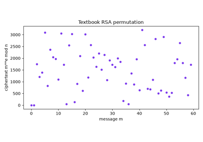
RSA: a public trapdoor (Rivest, Shamir and Adleman 1978)
1978 – Pohlig-Hellman: Why the Group Order Needs a Large Prime Factor#
The \(\sqrt n\) cost of the 1971 entry assumes the group cannot be taken apart. Pohlig and Hellman showed that if its order factors as \(n = \prod p_i^{e_i}\), the problem splits into one small problem per prime power. Raising \(g\) and \(h\) to the power \(n/p_i^{e_i}\) maps them into the subgroup of order \(p_i^{e_i}\), where the same equation reveals \(x\) modulo \(p_i^{e_i}\):
Each of these is solved one base-\(p_i\) digit at a time, each digit a
discrete log in a subgroup of order only \(p_i\), and the Chinese
Remainder Theorem combines the residues into \(x \bmod n\). The cost is
governed by the largest prime factor of \(n\), not by \(n\) itself.
That is why Diffie-Hellman and Schnorr run in a subgroup of large prime order,
and why blockchainkit.crypto.systems.asymmetric.TEACHING_GROUP uses a
safe prime \(p = 2q + 1\) with \(q\) prime: the subgroup of order
\(q\) has no smaller pieces to split off.
Implementation: blockchainkit.crypto.systems.discrete_log.pohlig_hellman()
factors the order by trial division, solves each prime-power part with
baby-step giant-step, and combines the answers.
References: S. Pohlig and M. Hellman, An Improved Algorithm for Computing Logarithms over GF(p) and Its Cryptographic Significance, IEEE Transactions on Information Theory 24(1), 106–110 (1978). DOI.
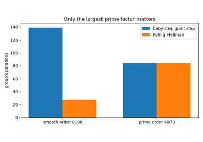
Pohlig-Hellman: why the group order must have a large prime factor (1978)
1979 – Shamir’s Threshold Secret Sharing#
A secret stored in one place is a single point of loss or compromise. Shamir split it among \(n\) people so that any \(t\) of them can recover it, while fewer learn nothing. The secret \(s\) is the constant term of a random polynomial of degree at most \(t-1\) over a prime field, and person \(i\) holds the share \(f(i)\):
A polynomial of degree at most \(t-1\) is determined by any \(t\) of its points, so \(t\) shares fix \(f\) and Lagrange interpolation returns \(f(0)\). With only \(t-1\) shares, every candidate secret \(s'\) still fits: the \(t-1\) points together with \((0, s')\) are \(t\) points, which define exactly one polynomial. Since the coefficients are uniform, each candidate is equally likely, so the guarantee is information-theoretic, not a computational hardness assumption.
Implementation: blockchainkit.crypto.systems.sharing.split_secret() and
blockchainkit.crypto.systems.sharing.recover_secret() use integer field
arithmetic.
References: A. Shamir, How to Share a Secret, Communications of the ACM 22(11), 612–613 (1979). DOI.
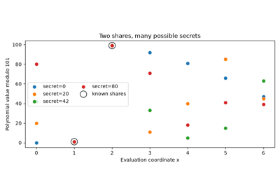
Shamir’s secret sharing: reconstruct a secret without storing it whole (1979)
1979 – Lamport’s One-Time Signatures from a Hash#
RSA signatures rest on number theory. Leslie Lamport showed that a one-way function alone suffices. The private key is 256 pairs of random strings \(x_{i,b}\) and the public key their hashes. For each bit \(b_i\) of \(H(m)\), the signer reveals \(x_{i,b_i}\), and the verifier checks \(H(x_{i,b_i}) = y_{i,b_i}\):
A forger needs, for every position, the preimage selected by the new message’s hash bit, and producing an unrevealed one means inverting \(H\). Each signature, however, reveals half of the private key. After \(k\) signatures on random messages, a given preimage has been revealed with probability \(1 - 2^{-k}\), so a fresh random message can be forged with probability about \((1 - 2^{-k})^{256}\), which reaches 78% at \(k = 10\). An attacker who can try many messages does far better, so a key must sign only once. Merkle’s trees, invented the same year, authenticate many one-time keys under one root. Because they rely only on hashing, these signatures resist quantum computers: the standardized SPHINCS+ (SLH-DSA) descends from them.
Implementation: blockchainkit.crypto.systems.lamport.lamport_keypair(),
blockchainkit.crypto.systems.lamport.lamport_sign(), and
blockchainkit.crypto.systems.lamport.lamport_verify() use full Lamport
pairs. Deployed hash-based signatures (XMSS, SPHINCS+) shrink them with
Winternitz chains and many-time trees.
References: L. Lamport, Constructing Digital Signatures from a One Way Function, Technical Report CSL-98, SRI International (1979).
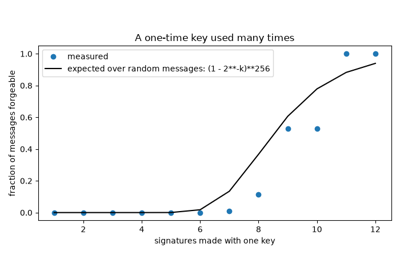
Lamport one-time signatures: signing with only a hash (1979)
1979 – Yuval’s Birthday Attack#
Finding two people with the same birthday in a room is much easier than finding someone with your birthday, because every pair of people is a chance for a match. Gideon Yuval turned this into an attack on signatures, which sign the hash of a message rather than the message itself: prepare many harmless and many harmful variants of a contract until one of each shares a hash, have the victim sign the harmless one, and the signature also fits the harmful one. Among \(q\) random \(n\)-bit values there are about \(q^2/2\) pairs, each equal with probability \(2^{-n}\), so a repeat appears with probability about \(q^2/2^{n+1}\) while that is small:
A collision is expected after about \(2^{n/2}\) hashes, so an \(n\)-bit hash gives only \(n/2\) bits of collision resistance. That is why SHA-256’s 256-bit output is chosen for 128-bit collision security.
Implementation: blockchainkit.crypto.systems.hashing.find_collision()
searches truncated SHA-256;
blockchainkit.crypto.systems.hashing.truncated_hash() does the
truncation.
References: G. Yuval, How to Swindle Rabin, Cryptologia 3(3), 187–191 (1979). DOI.
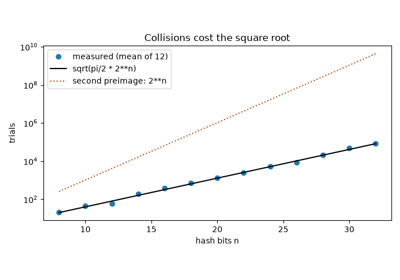
The birthday attack on hash functions (Yuval 1979)
1981 – Blum’s Coin Flipping by Telephone: Commitments#
Manuel Blum asked how two people who do not trust each other can flip a fair coin over the telephone. Alice seals her call, heads or tails, in an envelope and sends it; Bob then announces a coin flip; Alice opens the envelope, and she wins if the call matches. Each property of the envelope stops one cheat. It must be binding, so Alice cannot open it to the other call after hearing the flip, and hiding, so Bob cannot read the call and announce the opposite. Such an envelope is a commitment. With a hash and a random salt \(r\):
Opening to a different value means finding a second input with the same hash, so binding rests on collision resistance. Without the salt, hiding would fail: Bob could simply hash “heads” and “tails” and compare. A long random salt makes such guessing hopeless. Encoding the salt’s length \(|r|\) fixes where the salt ends and the message begins, so one input cannot be split two ways. Commitments became a basic building block: a Schnorr prover commits to \(R\) before seeing a challenge, and a block header commits to its transactions.
Implementation: blockchainkit.crypto.systems.commitments.commit() adds
domain separation and explicit salt framing;
blockchainkit.crypto.systems.commitments.verify_commitment() compares in
constant time.
References: M. Blum, Coin Flipping by Telephone: A Protocol for Solving Impossible Problems, CRYPTO ‘81, 11–15 (1981); reprinted in ACM SIGACT News 15(1), 23–27 (1983). DOI.
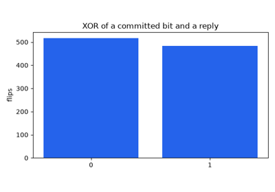
Coin flipping by telephone: hash commitments (Blum 1981)
1982-1983 – Chaum’s Blind Signatures and Private Payments#
To spend digital cash privately, a bank must authorize a token without learning which token it signed: like stamping an envelope without seeing the letter inside. David Chaum introduced blind signatures at CRYPTO ‘82 (proceedings 1983). RSA’s algebra lets the requester hide a message with an invertible random factor \(r\) and remove it after signing:
The factor cancels because \((r^e)^d = r\): \(s' = m^d r\), so \(s = m^d\) and \(s^e = m \pmod n\). The requester holds an ordinary signature on \(m\). The signer saw only \(m'\), and since \(r\) is uniform and raising to \(e\) permutes the residues, \(m'\) is uniform whatever \(m\) is, so it reveals nothing about the token.
Implementation: blockchainkit.crypto.systems.asymmetric.rsa_blind() and
blockchainkit.crypto.systems.asymmetric.rsa_unblind() expose this
identity with textbook RSA over a tiny modulus. Standardized blind RSA (RFC
9474) hashes and pads the message and uses full-size keys.
References: D. Chaum, Blind Signatures for Untraceable Payments, CRYPTO ‘82, 199–203 (proceedings 1983). DOI.
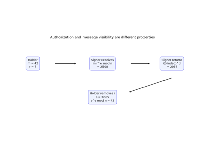
Chaum’s blind signatures: authenticate a message the signer cannot see (1982)
1985 – Elliptic Curves as a Cryptographic Group#
Diffie-Hellman needs only a group in which discrete logs are hard, not specifically the integers modulo \(p\). Victor Miller proposed elliptic curves for this at CRYPTO ‘85, and Neal Koblitz independently developed elliptic-curve cryptosystems. The group is a finite set of curve points with a special addition rule, not a smooth curve over the real numbers. A private key is an integer \(x\); the public key is the base point \(G\) added to itself \(x\) times:
Double-and-add computes \(Q\) in about \(2\log_2 x\) additions; recovering \(x\) from \(G, Q\) is the elliptic-curve discrete-log problem. The integers modulo \(p\) have extra structure, such as factorization into primes, that index-calculus algorithms exploit to solve discrete logs (and factor RSA moduli) in subexponential time, so those keys must be thousands of bits long. No such attack is known for well-chosen curves, leaving only the \(\sqrt n\) generic attacks, so a 256-bit curve key matches a roughly 3072-bit RSA key. “Well-chosen” matters: a curve whose order has only small prime factors falls to Pohlig-Hellman, and some special families reduce to easier problems.
Implementation: blockchainkit.crypto.systems.curves.Curve,
blockchainkit.crypto.systems.curves.add(), and
blockchainkit.crypto.systems.curves.multiply() implement the group law,
including infinity, inverse points, and doubling. TOY_CURVE has 19 points;
SECP256K1 is Bitcoin’s curve. The arithmetic is variable-time Python;
production libraries such as libsecp256k1 use constant-time code, because
timing can leak private scalars.
References: V. S. Miller, Use of Elliptic Curves in Cryptography, CRYPTO ‘85, LNCS 218, 417–426 (proceedings 1986). DOI. N. Koblitz, Elliptic Curve Cryptosystems, Mathematics of Computation 48(177), 203–209 (1987). DOI.
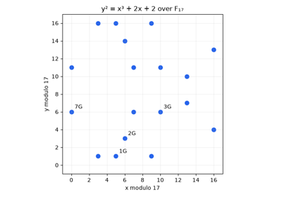
Elliptic-curve cryptography: a finite group you can draw (Miller and Koblitz 1985)
1985 – Zero Knowledge: Proofs That Reveal Nothing#
Goldwasser, Micali and Rackoff formalized a striking possibility: an interaction can convince a verifier that a statement is true while revealing nothing else. A proof is zero-knowledge if a simulator, without the secret, can produce transcripts indistinguishable from real ones. The verifier could have generated such transcripts alone, so the real ones cannot have taught them anything.
Schnorr’s later identification protocol shows the idea concretely. A prover with secret \(x\) and public key \(Q = xG\) commits to \(R = kG\) for a random \(k\), receives a random challenge \(c\), and answers \(s = k + cx\); the verifier checks \(sG = R + cQ\). A simulator who picks \(c\) and \(s\) first can solve that equation for a matching \(R\):
The proof still convinces a live verifier, because a prover who could answer two different challenges \(c_1 \ne c_2\) for the same \(R\) would know \(x = (s_1 - s_2)/(c_1 - c_2)\). Without \(x\), a cheating prover succeeds only by guessing \(c\) before committing, with probability \(1/n\). So a real prover must commit to \(R\) before seeing an unpredictable \(c\). That order is the only thing separating a proof from a simulation, so a recorded transcript proves nothing to a third party. (The simulation argument assumes the verifier picks \(c\) at random, as an honest one does.)
Implementation: blockchainkit.crypto.systems.signatures.verify_transcript()
checks the group equation;
blockchainkit.crypto.systems.signatures.simulate_transcript() is the
simulator.
References: S. Goldwasser, S. Micali, and C. Rackoff, The Knowledge Complexity of Interactive Proof-Systems, STOC ‘85, 291–304 (1985). DOI.
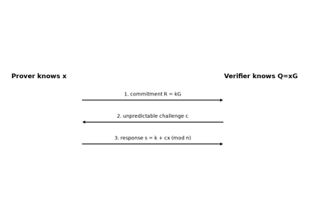
Zero-knowledge proofs: convincing without revealing (Goldwasser, Micali and Rackoff 1985)
1986 – The Fiat-Shamir Heuristic: From Interaction to Signatures#
An interactive proof convinces only the verifier who took part. Fiat and Shamir replaced the verifier’s random challenge with a hash of the transcript so far. The proof no longer needs a live conversation, and putting the message into the hash turns it into a signature:
The simulator’s trick was to pick \(c\) first and then solve for \(R\). Now \(c\) is computed from \(R\), and if \(H\) behaves like a random function, any change to \(R\) produces an unpredictable new \(c\), so the trick no longer works and a valid \((R, s)\) again shows knowledge of \(x\). Pointcheval and Stern later proved such signatures secure in this random-oracle model. Everything the verifier would have seen must go into the hash: leaving out \(Q\), for instance, lets an attacker choose the public key after the challenge. Schnorr signatures, EdDSA, and most zero-knowledge proof systems used by blockchains (SNARKs, STARKs) rely on this transform, and such omissions have broken real implementations (the 2022 “Frozen Heart” disclosures).
Implementation: blockchainkit.crypto.systems.signatures.challenge()
hashes the curve domain, public key, commitment, and message.
References: A. Fiat and A. Shamir, How To Prove Yourself: Practical Solutions to Identification and Signature Problems, CRYPTO ‘86, LNCS 263, 186–194 (proceedings 1987). DOI.
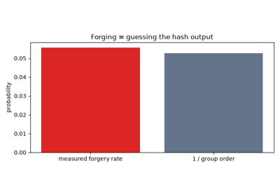
The Fiat-Shamir heuristic: from interaction to signatures (1986)
1987 – Feldman’s Verifiable Secret Sharing#
In Shamir’s scheme everyone must trust the dealer who hands out the shares: a dishonest dealer can hand out points that lie on no common polynomial, and nobody notices until recovery fails. Paul Feldman made the shares checkable without interaction. The dealer publishes \(C_j = g^{a_j}\) for each polynomial coefficient (with \(a_0 = s\)), and share holder \(i\) checks
Exponentiation turns sums into products, so the right side equals \(g^{\sum_j a_j i^j} = g^{f(i)}\). Because \(g\) has prime order \(q\), the check passes exactly when the share equals \(f(i)\) modulo \(q\), that is, when it lies on the committed polynomial. The price is that \(C_0 = g^{s}\) is public, so the secret is protected only by the hardness of the discrete log rather than information-theoretically. Verifiable sharing underlies distributed key generation, which threshold wallets use to create a key that no single party ever holds.
Implementation: blockchainkit.crypto.systems.sharing.feldman_split() and
blockchainkit.crypto.systems.sharing.feldman_verify() work over
blockchainkit.crypto.systems.asymmetric.TEACHING_GROUP, where discrete
logs are easy to compute. Real verifiable secret sharing needs a group of
cryptographic size and a broadcast channel for complaints.
References: P. Feldman, A Practical Scheme for Non-interactive Verifiable Secret Sharing, 28th Symposium on Foundations of Computer Science (FOCS), 427–438 (1987). DOI.
1989 – The Merkle-Damgård Construction and Length Extension#
A hash function must accept messages of any length, but it is much easier to design and analyze a compression function \(f\) that maps a fixed-size state and one fixed-size block to a new state. Ralph Merkle and Ivan Damgård independently showed at CRYPTO ‘89 how to chain one: pad the message with its length, split it into blocks, and feed each block through \(f\); the final state is the digest:
If \(f\) is collision-resistant, so is \(H\). Trace two colliding messages backward from their equal digests: at the last step where the inputs to \(f\) differ, the outputs are still equal, which is a collision in \(f\). The encoded length guarantees that such a step exists. MD5, SHA-1 and SHA-256 all follow this design. Its side effect: since \(H(m)\) is the chaining state, anyone can resume the chain from it and compute \(H(m \,\|\, \text{pad} \,\|\, s)\) knowing only \(H(m)\) and \(|m|\). A “MAC” computed as \(H(k \,\|\, m)\) is therefore forgeable: from one valid tag an attacker can tag an extended message without knowing \(k\).
Implementation: blockchainkit.crypto.systems.merkle_damgard.merkle_damgard_sha256()
reimplements SHA-256 block by block (checked against the standard library);
blockchainkit.crypto.systems.merkle_damgard.length_extension() performs
the attack.
References: R. C. Merkle, One Way Hash Functions and DES, CRYPTO ‘89, LNCS 435, 428–446 (1990). DOI. I. B. Damgård, A Design Principle for Hash Functions, CRYPTO ‘89, LNCS 435, 416–427 (1990). DOI.
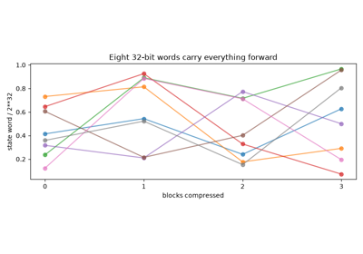
The Merkle-Damgard construction and length extension (1989)
1989-1991 – Schnorr Identification and Compact Signatures#
Claus Schnorr made discrete-log proofs short and fast. In additive notation, a prover with secret \(x\) and public key \(Q = xG\) commits with a fresh nonce \(k\), then answers a challenge \(c\). The verifier’s check holds because \(sG = (k + cx)G = kG + c(xG)\):
The Fiat-Shamir transform with \(c = H(R, Q, m)\) turns this into a signature \((R, s)\): one group element and one scalar. The nonce must be fresh, since two signatures with the same \(k\) give two linear equations in \(k\) and \(x\) (the 2010-2013 entry). The equation is also linear in the keys: if two signers use the same \(c\), their \(R\) and \(s\) values add to a valid signature for \(Q_1 + Q_2\), which later enabled multi-signatures (the 2018 entry). A patent kept Schnorr signatures out of standards until it expired in 2008; Bitcoin adopted them in 2021 as BIP-340.
Implementation: blockchainkit.crypto.systems.signatures.sign(),
blockchainkit.crypto.systems.signatures.verify(), and
blockchainkit.crypto.systems.signatures.recover_reused_nonce_key() use a
domain-separated scheme over a prime-order elliptic-curve group, an additive
adaptation of the original multiplicative groups. The challenge encoding
differs from BIP-340 (no x-only keys or tagged hash), so these signatures do
not verify in Bitcoin.
References: C. P. Schnorr, Efficient Signature Generation by Smart Cards, Journal of Cryptology 4, 161–174 (1991); following the CRYPTO ‘89 work. DOI.
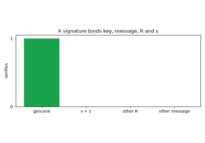
Schnorr signatures: short, fast, and linear (1989-1991)
1991 – Pedersen Commitments: Perfectly Hiding and Additive#
A hash commitment hides its contents only from an attacker who cannot invert the hash, and nothing useful can be computed on sealed values. Torben Pedersen introduced a commitment that hides its contents even from an attacker with unlimited computing power, and where multiplying sealed commitments adds the amounts inside them. With two generators \(g, h\) of a group of prime order \(q\):
Write \(h = g^{w}\). Then \(C = g^{v + wr}\), and for any other value \(v'\) the blinding \(r' = r + (v - v')/w \bmod q\) gives the same \(C\). Every value is equally consistent with \(C\), so hiding is perfect. Conversely, anyone who opens one commitment to two values \((v, r) \ne (v', r')\) has \(v + wr = v' + wr'\) and can solve for \(w = \log_g h\). Binding is therefore only as strong as that discrete log, which is why \(h\) is derived by hashing, so that nobody knows \(w\). The additive property lets anyone check that hidden inputs equal hidden outputs: the basis of confidential transactions in Monero and Mimblewimble.
Implementation: blockchainkit.crypto.systems.commitments.pedersen_commit()
and blockchainkit.crypto.systems.commitments.pedersen_generators() work in
the teaching group, so binding holds only while its small discrete logarithm
stays unknown; production uses 256-bit elliptic-curve groups.
References: T. P. Pedersen, Non-Interactive and Information-Theoretic Secure Verifiable Secret Sharing, CRYPTO ‘91, LNCS 576, 129–140 (1992). DOI.
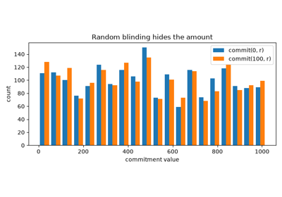
Pedersen commitments: perfectly hiding and additive (1991)
1996 – HMAC: Keyed Hashing Done Right#
To prove that a message came from someone holding a shared key, the key must be mixed into the hash in a way that leaves an attacker nothing to extend; the 1989 entry shows that \(H(k \,\|\, m)\) fails this test. Bellare, Canetti and Krawczyk defined HMAC, which hashes twice with two keys derived from \(k\), and proved it secure under assumptions about the compression function:
Length extension now fails. Resuming the outer hash from the tag only appends data after the inner digest. A tag for \(m \,\|\, s\) needs the inner digest of \(m \,\|\, s\), which the attacker cannot compute without the key. HMAC became RFC 2104 in 1997 and is everywhere: TLS, key derivation (HKDF), and the deterministic nonces of RFC 6979.
Implementation: blockchainkit.crypto.systems.mac.hmac_sha256(),
contrasted with the broken blockchainkit.crypto.systems.mac.naive_mac().
References: M. Bellare, R. Canetti, and H. Krawczyk, Keying Hash Functions for Message Authentication, CRYPTO ‘96, LNCS 1109, 1–15 (1996). DOI.
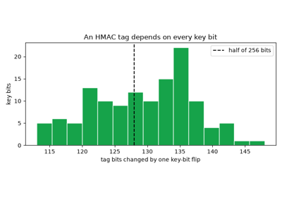
HMAC: keyed hashing that resists length extension (1996)
2002 – SHA-256 as a Standardized Hash Primitive#
Different programs must compute the same fingerprint for the same data, or a signature made by one cannot be checked by another. NIST’s FIPS 180-2 specified SHA-256 alongside other secure hash algorithms, with test vectors that independent implementations can check themselves against. A good hash behaves like a random function, so related inputs must give unrelated outputs: changing one input bit should flip each of the 256 output bits independently with probability one half (the avalanche effect). The number of flipped bits is then binomial:
If outputs clustered by input instead, an attacker could steer toward a target digest faster than the \(2^{256}\) (preimage) or \(2^{128}\) (collision, the 1979 entry) work that a random function forces. A digest is a compact fingerprint; it does not encrypt the input, and a guessable input can be found by hashing candidates.
Implementation: blockchainkit.crypto.systems.hashing.sha256() delegates
to Python’s standard library;
blockchainkit.crypto.systems.merkle_damgard.merkle_damgard_sha256() is a
readable reimplementation (the 1989 entry) that the tests check against it.
References: NIST, Secure Hash Standard, FIPS PUB 180-2 (2002). Historical standard record, cited for historical context rather than as current standards guidance.
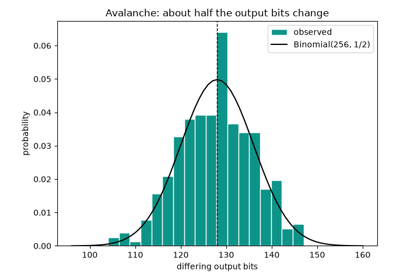
SHA-256 and the avalanche effect (FIPS 180-2, 2002)
2010-2013 – Nonce Reuse in Practice, and Deterministic Nonces#
A signature hides the private key behind a fresh random nonce. With \(s_i = k + c_i x\), two signatures that share \(k\) but sign different messages (so \(c_1 \ne c_2\)) are two linear equations in two unknowns. Subtracting them eliminates \(k\):
ECDSA’s equation is different, \(s = k^{-1}(z + rx)\), but the same counting applies: a repeated nonce leaves two equations in \(k\) and \(x\). In December 2010 the fail0verflow team showed that Sony’s PlayStation 3 signed software with a constant ECDSA nonce, and recovered Sony’s private key. Weak random number generators in Android wallets led to Bitcoin thefts in 2013. The fix was to stop needing randomness: Thomas Pornin’s RFC 6979 derives the nonce from an HMAC-based deterministic generator seeded with the private key and the message hash. Distinct messages get distinct nonces, so the equations above never arise, and the nonce is unpredictable without the key.
Implementation: blockchainkit.crypto.systems.signatures.recover_reused_nonce_key()
performs the extraction;
blockchainkit.crypto.systems.signatures.deterministic_nonce() implements
RFC 6979 section 3.2 with SHA-256 and reproduces the RFC’s test vectors. It
feeds this package’s Schnorr signatures rather than ECDSA, and adds no
protection against fault attacks.
References: fail0verflow (bushing, marcan, sven), Console Hacking 2010: PS3 Epic Fail, 27th Chaos Communication Congress (2010). T. Pornin, Deterministic Usage of the Digital Signature Algorithm (DSA) and Elliptic Curve Digital Signature Algorithm (ECDSA), RFC 6979 (2013). DOI.
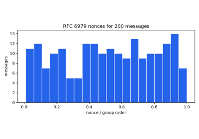
Nonce reuse in practice, and deterministic nonces (2010-2013)
2018 – MuSig: Schnorr Multi-Signatures and the Rogue-Key Attack#
Schnorr signatures are linear, so with a shared challenge \(c\), partial signatures \(s_i = k_i + c x_i\) add up to one ordinary signature for the aggregate key \(\sum Q_i\) and nonce \(\sum R_i\). Done naively, the last signer to announce a key can wait for the others and announce \(Q_{\text{rogue}} = xG - Q_{\text{honest}}\) for an \(x\) they know. They do not know the private key of \(Q_{\text{rogue}}\), but they do not need it: the aggregate is \(xG\), so they can sign alone. Maxwell, Poelstra, Seurin and Wuille’s MuSig weights every key by a hash of the whole key list \(L\):
The cancellation needs a key chosen as a function of the others’ weighted keys, but the weights depend on the attacker’s own key through \(L\). Changing the key changes every coefficient unpredictably, so the attacker is left guessing, as with any hash. Bitcoin’s Taproot upgrade (2021) made such aggregate spends indistinguishable from single-signer spends.
Implementation: blockchainkit.crypto.systems.multisig.musig_coefficients(),
blockchainkit.crypto.systems.multisig.aggregate_public_keys(), and
blockchainkit.crypto.systems.multisig.musig_sign(). All signers run in
one process; real MuSig needs a round of nonce commitments (or MuSig2’s two
nonces per signer) to resist attacks across concurrent signing sessions.
References: G. Maxwell, A. Poelstra, Y. Seurin, and P. Wuille, Simple Schnorr Multi-Signatures with Applications to Bitcoin, Designs, Codes and Cryptography 87, 2139–2164 (2019); preprint IACR ePrint 2018/068. DOI.
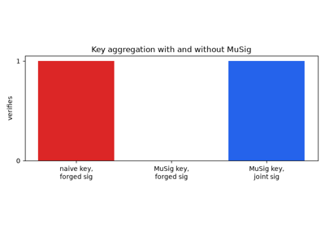
MuSig: Schnorr multi-signatures and the rogue-key attack (2018)